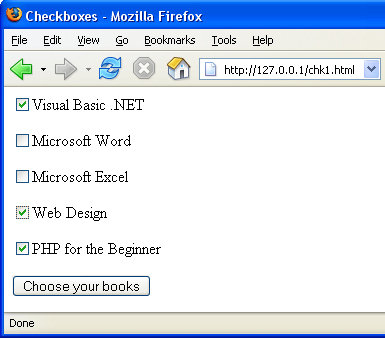

PHP and HTML Checkboxes
Like Radio buttons, checkboxes are used to give visitors a choice of options. Whereas Radio Buttons restrict users to only one choice, you can select more than one option with Checkboxes.
Here's a page that asks users to choose which course books they want to order:

As you can see, five items can be selected. Only three are chosen at the moment. When the button is clicked you, as the programmer, want to do at least two things: record which checkboxes were ticked, and have PHP "remember" which items were chosen, just in case of errors.
You don't want the ticks disappearing from the checkboxes, if the user has failed to enter some other details incorrectly. We saw with Radio Buttons that this can involve some tricky coding. The same is true for checkboxes. Let's have a look at one solution to the problem.
Because the code is a little more complex, we've included it in the files you downloaded. The script you're looking for is checkboxes.php, and is in the scripts folder. Open it up and take a look at the code. Here it is in full, if you want to copy and paste it:
Note one thing about the HTML checkbox elements: they all have different NAME values (ch1, ch2 ch3, etc). When we coded for the Radio Buttons, we gave the buttons the same NAME. That's because only one option can be selected with Radio Buttons. Because the user can select more than one option with Checkboxes, it makes sense to give them different NAME values, and treat them as separate entities (but some advocate treating them just like Radio Buttons).
In your PHP code, the technique is to check whether each checkbox element has been checked or not. It's more or less the same as for the radio Buttons. First we set up five variable and set them all the unchecked, just like we did before:
$ch1 = 'unchecked';
$ch2 = 'unchecked';
$ch3 = 'unchecked';
$ch4 = 'unchecked';
$ch5 = 'unchecked';
The next thing is the same as well: check to see if the Submit button was clicked:
if (isset($_POST['Submit1'])) {
}
Inside of this code, however, we have another isset( ) function:
if ( isset($_POST['ch1']) ) {
}
This time, we're checking to see if a checkbox was set. We need to do this because of a peculiarity of HTML checkboxes. If they are not ticked, they have no value at all, so nothing is returned! If you try the code without checking if the checkboxes are set, then you'll have to deal with a lot of "Undefined" errors.
If the checkbox is ticked, though, it will return a value. And so the isset( ) function will be true. If the isset( ) function is true, then our code inside of the if statement gets executed:
if ($ch1 == 'net') {
$ch1 = 'checked';
}
This is yet another If Statement! But we're just checking the value of a variable. We need to know what is inside of it. This one says, "If the value inside of the variable called $ch1 is 'net' then execute some code.
The code we need to execute is to put the text 'checked' inside of the variable called $ch1. The rest of the if statements are the same – one for each checkbox on the form.
The last thing we need to do is to print the value of the variable to the HTML form:
<Input type = 'Checkbox' Name ='ch1' value ="net"
<?PHP print $ch1; ?>
>Visual Basic .NET
Again, this is the same code you saw with the Radio Buttons. The PHP part is:
<?PHP print $ch1; ?>
So we're just printing what is inside of the variable called $ch1. This will either be "unchecked" or "checked",
There are other solution for checkboxes, but none seem simple! The point here, though, is that to get the job done we used Conditional Logic.
How to validate checkboxes using JavaScript
Another way to deal with checkboxes, though, is with some JavaScript. The following script was sent to us by Tapan Bhanot. It uses JavaScript to validate the checkboxes before sending it to a PHP script. Note how the checkboxes all have the same name on the HTML form, and that it is being posted to a PHP script called step2.php:
View Tapan's script (opens in a new window)
You'll learn more about dealing with HTML forms as we go along. For now, we'll leave the subject, and move on. It's a bit of a bumpy ride in the next part, though, as we're tackling loops!